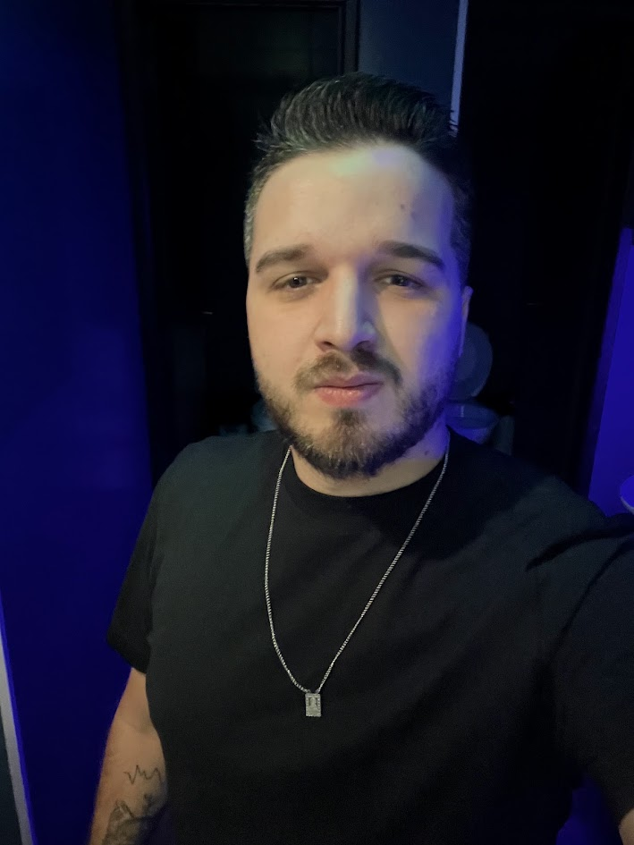

Y');">Yuri
@oyuridevSou dev, trabalho de casa e mostro a vida real do home office, com humor, entre café, reunião e produtividade duvidosa. Também crio produtos digitais com IA e compartilho o que realmente ajuda a render mais sem perder a cabeça. Comece pelo guia gratuito abaixo.
Baixar o guia Modo Foco 100% gratuito